الصيدلية
بوابة الصيدلية
سلّم جرعة البرنامج للمريض عند الكاونتر في خطوات قليلة — افتح الكود، وتحقق من البطاقة، وسجّل العبوة، ودَع المريض يؤكد الاستلام من هاتفه.
للصيادلة في الفروع التي تصرف أدوية برامج دعم المرضى.
اضغط على الصورة لتكبيرها.
قبل أن تبدأ
بوابة الصيدلية صفحة ويب تعمل على الهاتف أو التابلت أو الكمبيوتر. الهاتف هو الأسهل عند الكاونتر لأنه يستطيع مسح رمز QR من هاتف المريض.
- بيانات الدخول. تمنح MedTech كل فرع حسابًا واحدًا: رقم هاتف وكلمة مرور. الحساب للفرع وليس لشخص بعينه، لذلك يستخدمه كل من يعمل على الكاونتر. إذا فُقدت كلمة المرور اطلب من MedTech إعادة تعيينها.
- ضعها على الشاشة الرئيسية. على الهاتف افتح البوابة في المتصفح واختر إضافة إلى الشاشة الرئيسية من قائمة المتصفح، فتفتح بعدها مثل التطبيق.
- ما يحضره المريض. هاتفه وعليه تطبيق MedTech للمريض (يعرض كود الصرف ورمز QR)، وبطاقته الشخصية، وابتداءً من الجرعة الثانية: عبوة الجرعة السابقة.
تسجيل الدخول
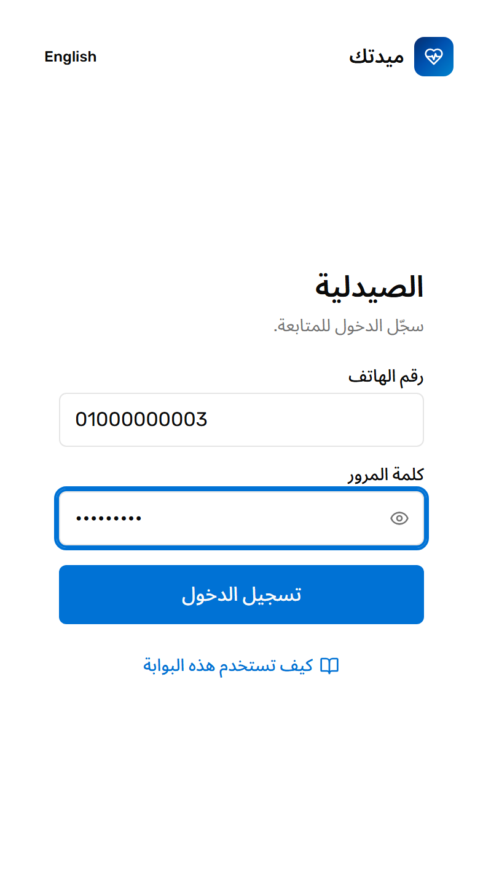
- 1رقم الهاتف — رقم هاتف الفرع.
- 2كلمة المرور — كلمة مرور الفرع.
- 3اضغط على العين لإظهار كلمة المرور أثناء كتابتها.
- 4تسجيل الدخول يفتح شاشة الصرف.
- 5بدّل لغة الشاشة بين العربية وEnglish في أي وقت.
تُبقيك البوابة مسجَّل الدخول على هذا الجهاز. استخدم تسجيل الخروج (من قائمة الإعدادات أدناه) عند ترك جهاز مشترك. ورابط كيف تستخدم هذه البوابة أسفل خانة الدخول يفتح هذا الدليل.
شاشة الصرف
كل شيء يبدأ من هنا: خانة كود المريض، وقائمة الجرعات المنتظرة في فرعك.
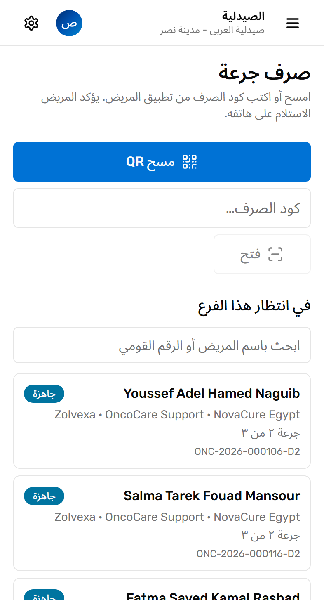
- 1مسح QR يفتح الكاميرا لمسح رمز QR على هاتف المريض.
- 2أو اكتب كود الصرف الخاص بالمريض هنا…
- 3…ثم اضغط فتح.
- 4في انتظار هذا الفرع تعرض كل جرعة مخصصة لفرعك وجاهزة للاستلام.
- 5ابحث في القائمة باسم المريض أو الرقم القومي.
- 6اضغط على المريض لفتح جرعته مباشرة. جاهزة تعني أنه يمكن استلامها الآن.
- 7القائمة تفتح بقية صفحات البوابة.
زر الترس أعلى الشاشة يفتح قائمة الإعدادات.
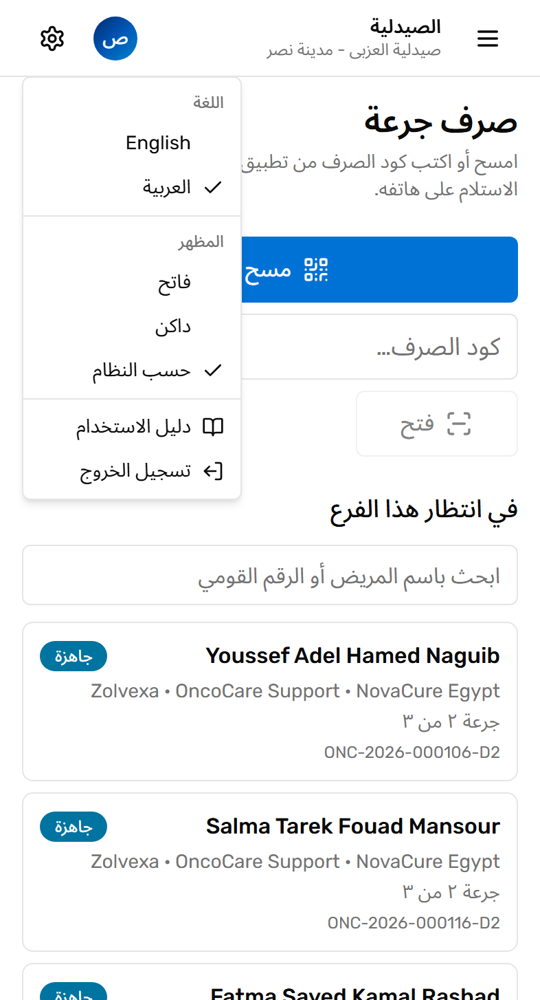
- 1اللغة — العربية أو English.
- 2المظهر — شاشة فاتحة أو داكنة.
- 3تسجيل الخروج — سجّل الخروج دائمًا على الجهاز المشترك.
ودليل الاستخدام، فوق تسجيل الخروج مباشرة، يفتح هذا الدليل في علامة تبويب جديدة.
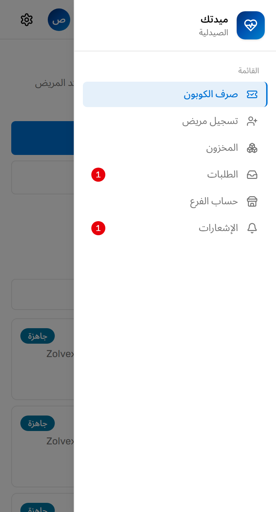
- 1صرف الكوبون — شاشة الصرف.
- 2تسجيل مريض — تظهر فقط إذا سمح البرنامج لفرعك بتسجيل المرضى.
- 3المخزون — الأرقام التسلسلية للعبوات الموجودة في فرعك والتي سُلّمت.
- 4الطلبات — أسئلة منسقي البرامج عن توفر دواء لديك، والنقطة الحمراء تعرض عدد الطلبات التي تنتظر ردك.
- 5حساب الفرع — بيانات هذا الحساب.
- 6الإشعارات — تنبيهات عن الجرعات في فرعك، والنقطة الحمراء تعرض عدد غير المقروء.
تسليم جرعة خطوة بخطوة
يتم التسليم كله في شاشة واحدة من أعلى إلى أسفل. لا يُسجَّل أي شيء حتى يؤكد المريض من هاتفه، فإذا توقفت في المنتصف لا يُحفظ شيء.
١. افتح الجرعة واقرأها
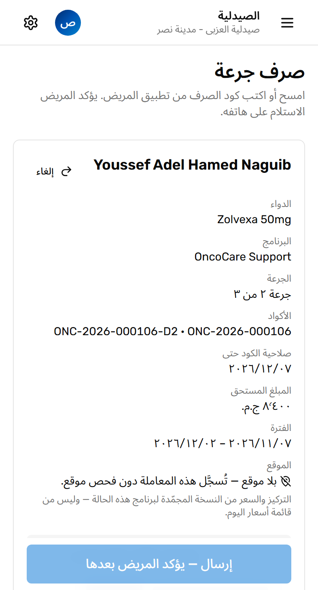
- 1اسم المريض. تأكد أنه الشخص الذي أمامك.
- 2الدواء — الدواء والتركيز المطلوب تسليمه.
- 3الجرعة — رقم هذه الجرعة (مثل جرعة ٢ من ٣).
- 4صلاحية الكود حتى — آخر يوم يمكن استخدام الكود فيه.
- 5المبلغ المستحق — السعر الكامل للجرعة. المبلغ الذي يدفعه المريض بعد أي خصم يظهر لاحقًا في الأسفل.
- 6إلغاء للخروج دون تسجيل أي شيء.
تحت ذلك تجد الأكواد، والفترة (التواريخ التي يمكن استلام الجرعة خلالها)، وما إذا كان موقع العملية قد سُجّل.
٢. تحقق من هوية المريض
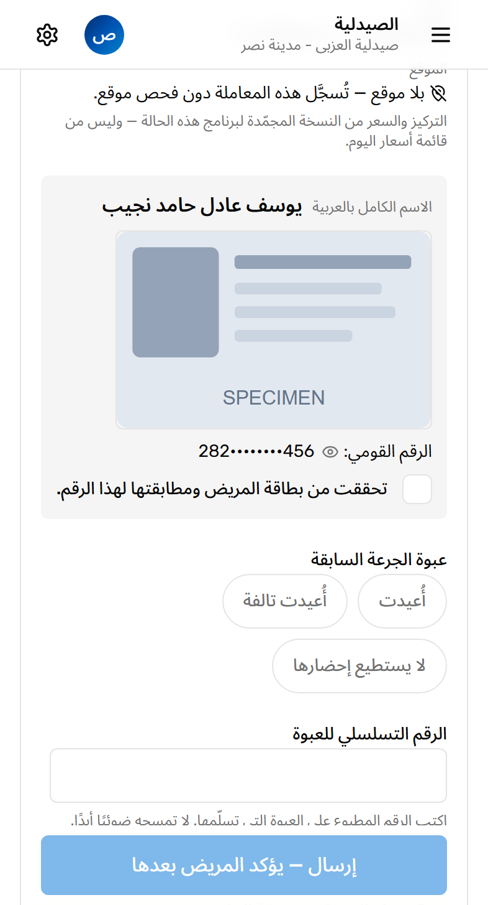
- 1الرقم القومي مخفيًا جزئيًا. قارنه بالبطاقة التي يعطيها لك المريض.
- 2اضغط على العين لإظهار الرقم كاملًا عند الحاجة.
- 3ضع علامة على تحققت من بطاقة المريض ومطابقتها لهذا الرقم. لا يمكنك المتابعة دونها.
تظهر في الأعلى صورة البطاقة التي رفعها المريض واسمه العربي الكامل لمقارنتهما بالبطاقة.
٣. سجّل العبوة السابقة (من الجرعة الثانية)
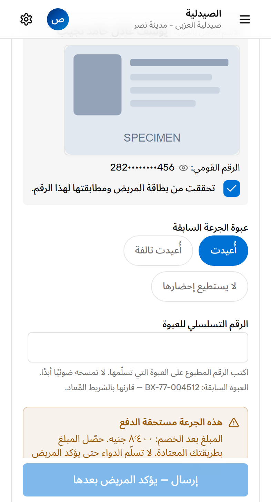
- 1عبوة الجرعة السابقة — اختر ما أعاده المريض: أُعيدت أو أُعيدت تالفة أو لا يستطيع إحضارها.
يظهر الرقم التسلسلي للعبوة السابقة تحت خانة الرقم التسلسلي لتطابق به الشريط المُعاد.
٤. أدخل الرقم التسلسلي للعبوة التي تسلّمها
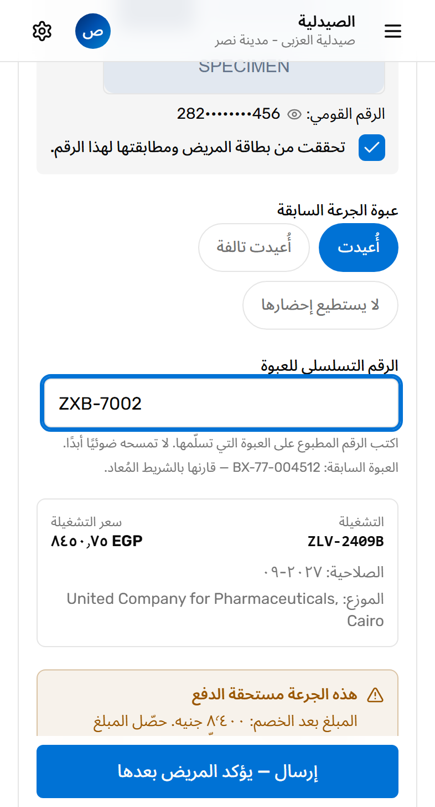
- 1الرقم التسلسلي للعبوة — اكتب الرقم المطبوع على العبوة التي تسلّمها. اكتبه ولا تمسحه ضوئيًا.
- 2تظهر التشغيلة: رقمها وسعرها وتاريخ الصلاحية والموزّع. تأكد أنها تطابق العبوة.
بعض البرامج تحتفظ بقائمة الأرقام التسلسلية الموجودة في فرعك، فتختار العبوة من الرقم التسلسلي للعبوة (اختر من قائمة فرعك) بدل الكتابة. إذا لم تكن العبوة في القائمة استخدم العبوة ليست في القائمة؟ اكتب رقمها التسلسلي.
بعض البرامج لا تتتبّع الأرقام التسلسلية للعبوات أصلًا، وعندها لا تظهر خانة الرقم التسلسلي للعبوة:
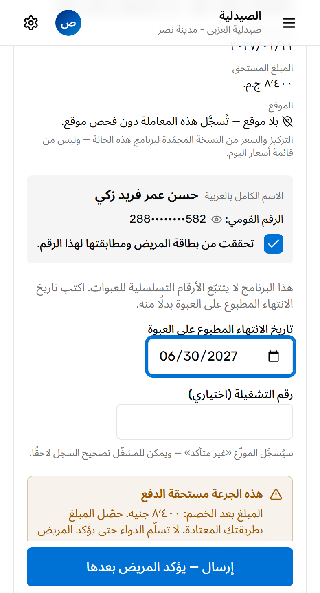
- 1هذا البرنامج لا يتتبّع الأرقام التسلسلية للعبوات. — لذلك تسجّل بيانات العبوة بدلًا منه.
- 2تاريخ الانتهاء المطبوع على العبوة — اكتب تاريخ الانتهاء من العبوة.
- 3رقم التشغيلة (اختياري) — رقم التشغيلة المطبوع على العبوة إن أمكن قراءته.
- 4يُسجَّل الموزّع «غير متأكد»، ويمكن لفريق البرنامج تصحيحه لاحقًا.
٥. اقرأ رسالة الدفع ثم أرسل
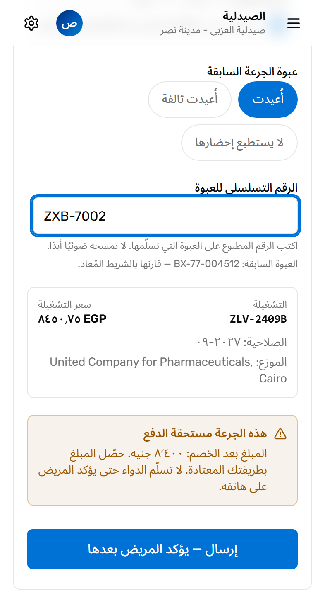
- 1رسالة الدفع تخبرك بالضبط بما تفعله بخصوص المال في هذه الجرعة.
- 2إرسال — يؤكد المريض بعدها يرسل التسليم إلى هاتف المريض.
الرسالة دائمًا واحدة من هذه:
| الرسالة | ماذا تفعل |
|---|---|
| هذه الجرعة مستحقة الدفع | حصّل المبلغ المعروض (بعد الخصم) بطريقتك المعتادة. |
| سيتم الدفع عبر التطبيق | لا تحصّل أي نقود. يدفع المريض من التطبيق. |
| هذه جرعة مجانية — لا مبلغ مستحق | لا تحصّل شيئًا. |
في كل الحالات لا تسلّم الدواء حتى يؤكد المريض من هاتفه.
٦. انتظر تأكيد المريض
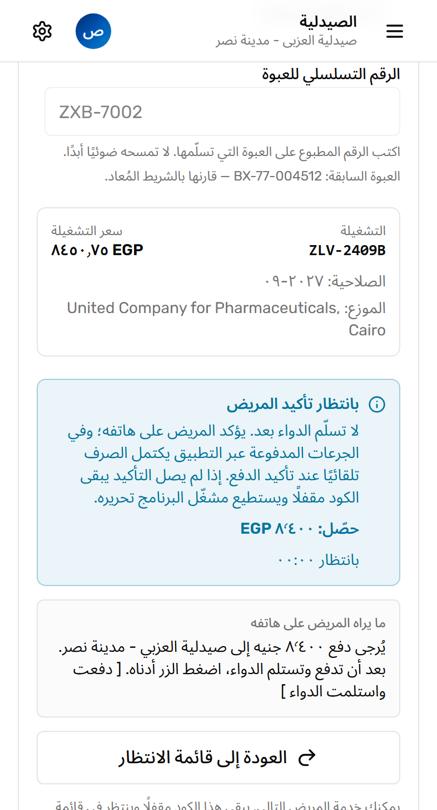
- 1بانتظار تأكيد المريض — لا تسلّم الدواء بعد.
- 2المبلغ المطلوب تحصيله، إذا كانت الجرعة تُدفع عند الكاونتر.
- 3ما يراه المريض على هاتفه — اعرضه على المريض إذا لم يجد الزر.
يضغط المريض الزر في تطبيقه. في الجرعات المدفوعة عبر التطبيق يكتمل التأكيد تلقائيًا عند الدفع. اضغط تحقق الآن للتحديث.
لا يلزم أن تنتظر على هذه الشاشة: العودة إلى قائمة الانتظار تتيح لك خدمة المريض التالي. يبقى الكود مقفلًا وينتظر في القائمة بحالة بانتظار المريض — افتحه من هناك مرة أخرى. إذا لم يصل التأكيد أبدًا يستطيع مشغّل البرنامج تحرير الكود.
٧. أتلف العلبة ثم سلّمها
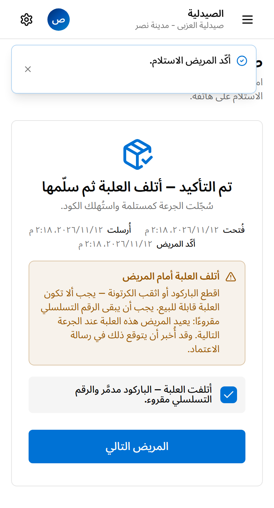
- 1تم التأكيد — أتلف العلبة ثم سلّمها. سُجّلت الجرعة كمستلمة.
- 2سجل التسليم: متى فُتح، ومتى أُرسل، ومتى أكّد المريض.
- 3أمام المريض، اقطع الباركود أو اثقب العلبة حتى لا يمكن بيعها مرة أخرى — ثم ضع علامة على أتلفت العلبة — الباركود مدمَّر والرقم التسلسلي مقروء. اترك الرقم التسلسلي مقروءًا، فالمريض يعيد هذه العلبة في المرة القادمة.
- 4المريض التالي يعيدك إلى شاشة الصرف.
إذا لم يُفتح الكود
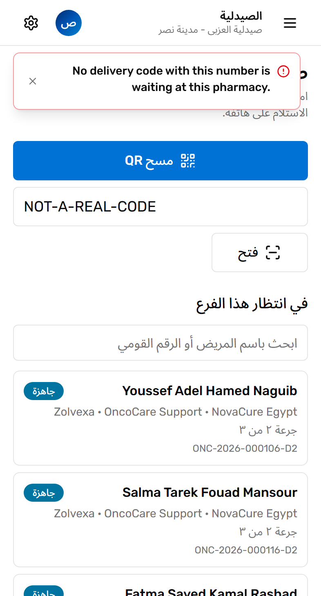
- 1سبب عدم فتح الكود. بعض رسائل النظام تظهر بالإنجليزية.
- 2راجع الكود الذي كتبته مع هاتف المريض.
| ما يظهر | المعنى |
|---|---|
| No delivery code with this number is waiting at this pharmacy. | الكود مكتوب خطأ، أو الجرعة غير مخصصة لفرعك. راجعه مع المريض. |
| كود الاستلام هذا غير متاح في هذا الفرع. | الجرعة تخص فرعًا آخر. |
| تم تسليم هذه الجرعة بالفعل. | تم استلامها. لا شيء آخر مطلوب. |
| انتهت صلاحية كود الاستلام هذا أو تم إلغاؤه. | على المريض التواصل مع البرنامج؛ المنسق وحده يستطيع إعادة إصداره. |
| هذه الجرعة غير قابلة للاستلام بعد | لم تبدأ فترة الاستلام. أخبر المريض بالتاريخ المعروض. |
| لم يتم الإرسال. حاول مرة أخرى. | انقطع الاتصال. حاول مرة أخرى؛ لم يُسجَّل شيء. |
المخزون والأرقام التسلسلية
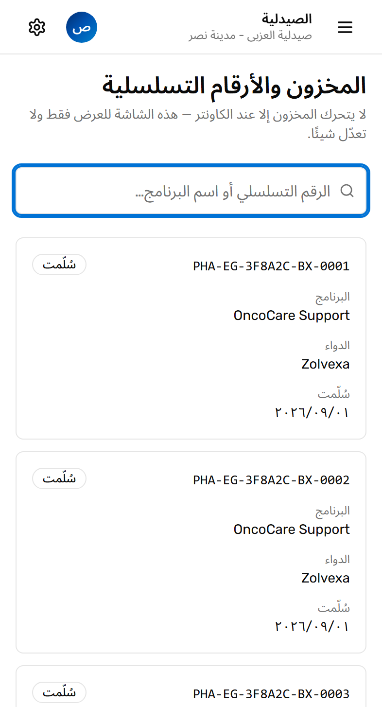
- 1المخزون والأرقام التسلسلية — العبوات الموجودة في فرعك لمرضى البرامج، والعبوات التي سلّمها.
- 2ابحث بالرقم التسلسلي أو باسم البرنامج.
هذه الصفحة للعرض فقط ولا تغيّر المخزون. يتحرك المخزون عند تسليم جرعة من شاشة الصرف.
طلبات التوفر
في بعض البرامج يسأل منسق البرنامج الصيدليات عن توفر الدواء قبل أن يختار صيدلية للمريض. تصلك هذه الأسئلة في الطلبات.
الطلب مجرد سؤال: لا ترى من هو المريض، والتأكيد لا يرسل المريض إليك. إذا اختار المنسق — أو المريض — فرعك بعد ذلك، تظهر الجرعة في في انتظار هذا الفرع كالمعتاد.
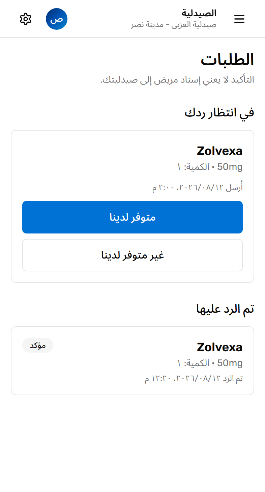
- 1التأكيد لا يعني إسناد مريض إلى صيدليتك.
- 2في انتظار ردك — يعرض كل طلب الدواء وتركيزه والكمية ووقت إرساله.
- 3متوفر لدينا — أكّد أن فرعك يستطيع توفيره.
- 4غير متوفر لدينا — ارفض مع ذكر السبب.
- 5تم الرد عليها — ردودك السابقة وحالة كل منها.
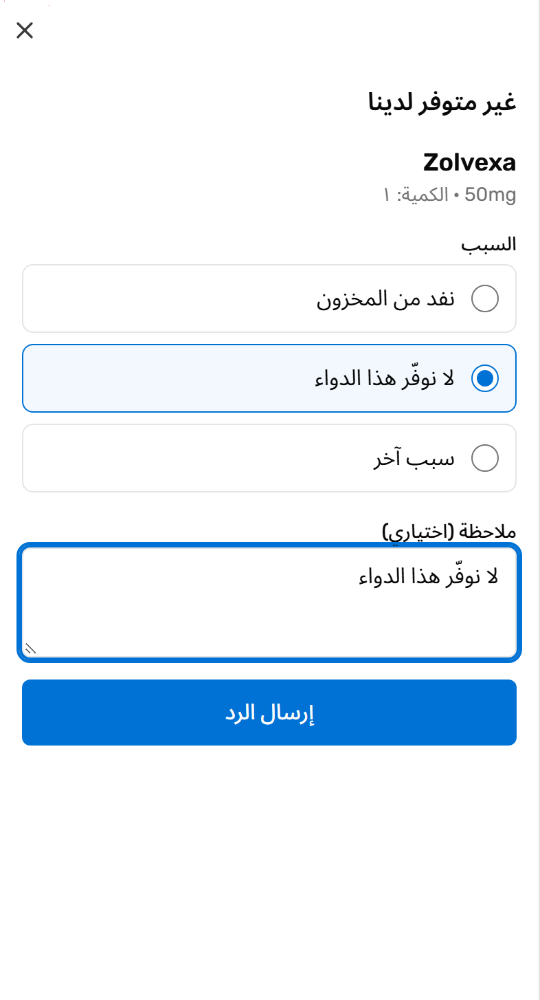
- 1السبب — نفد من المخزون أو لا نوفّر هذا الدواء أو سبب آخر.
- 2ملاحظة (اختياري) — أي شيء يحتاج المنسق إلى معرفته.
- 3إرسال الرد.
حساب الفرع
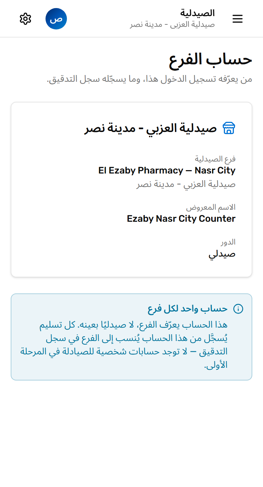
- 1حساب الفرع — الفرع، والاسم المعروض، ودور هذا الحساب.
- 2حساب واحد لكل فرع. كل تسليم يتم بهذا الحساب يُسجَّل باسم الفرع وليس باسم صيدلي بعينه.
الإشعارات
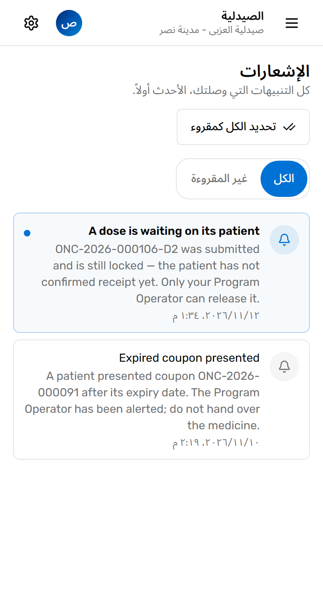
- 1تحديد الكل كمقروء يزيل علامات غير المقروء. استخدم الكل وغير المقروءة للتصفية.
تصلك تنبيهات مثلًا عندما تنتظر جرعةٌ مريضَها أو عندما يقدّم مريض كودًا منتهي الصلاحية.
تسجيل مريض جديد
تظهر تسجيل مريض في القائمة فقط إذا سمح البرنامج لفرعك بتسجيل المرضى. تُدخل أنت هوية المريض، ثم يُكمل المريض الخطوات في تطبيقه ويستكمل منسق البرنامج نموذج التسجيل.
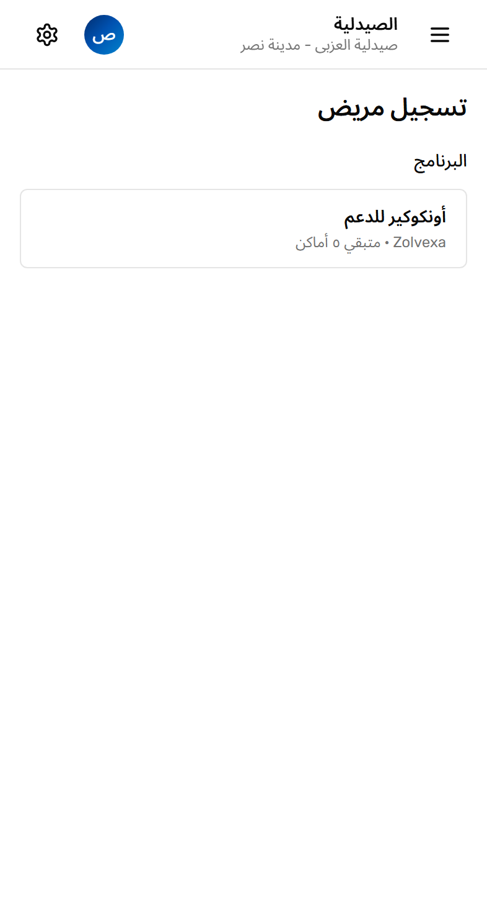
- 1اختر البرنامج. متبقي … مكان هو عدد المرضى الذين ما زال يمكن لفرعك تسجيلهم فيه.
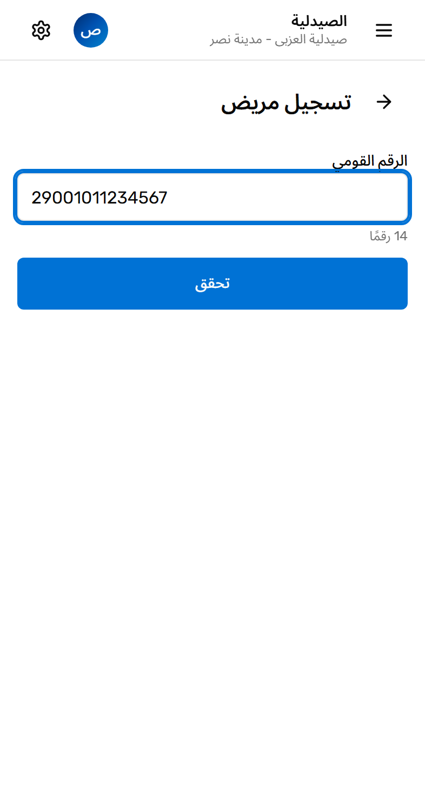
- 1الرقم القومي — الأرقام الأربعة عشر على بطاقة المريض.
- 2تحقق يبحث عن المريض.
إذا كان المريض جديدًا على MedTech:
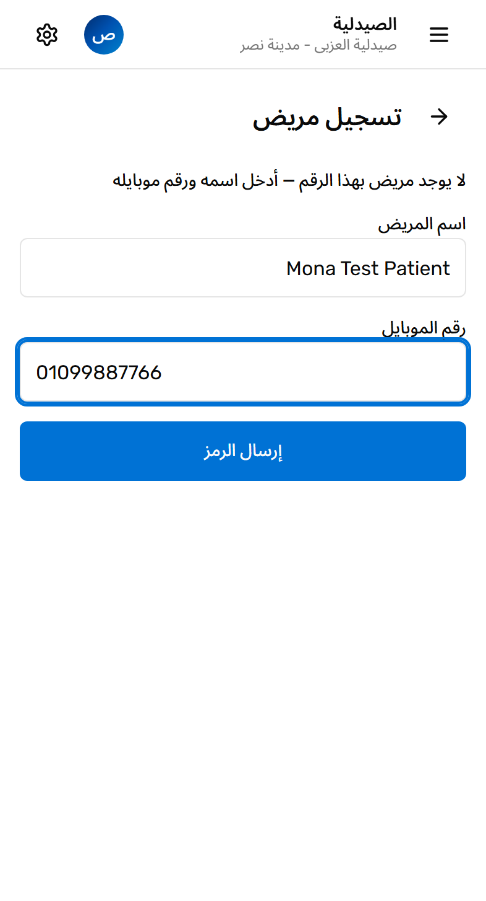
- 1لا يوجد مريض بهذا الرقم — لذلك تُدخل بياناته.
- 2اسم المريض — كما في البطاقة.
- 3رقم الموبايل — رقم المريض نفسه؛ يُرسل الرمز إليه.
- 4إرسال الرمز يرسل رمز تأكيد إلى هذا الرقم.
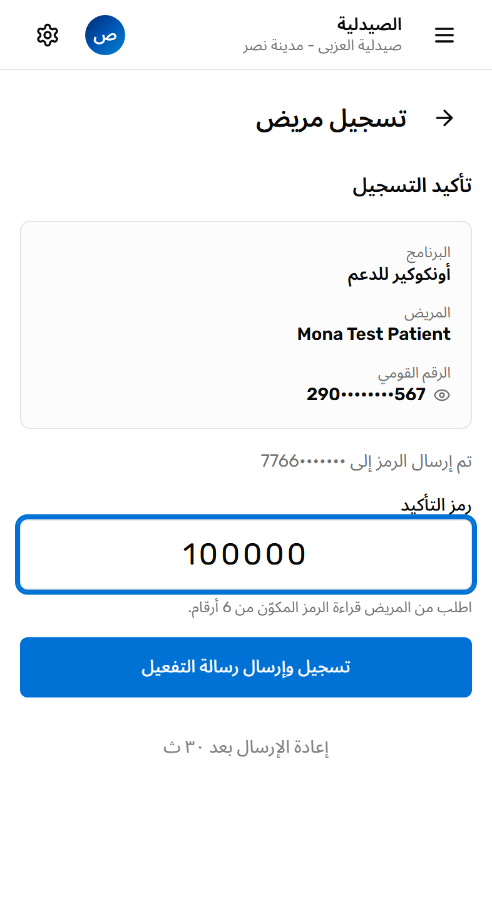
- 1تأكيد التسجيل — راجع البرنامج والاسم والرقم مرة أخيرة.
- 2يعرض الرقم الذي أُرسل إليه الرمز. إذا لم يصل، أعد الإرسال بعد انتهاء العد التنازلي.
- 3رمز التأكيد — اطلب من المريض أن يقرأ لك الرمز المكوّن من ٦ أرقام.
- 4تسجيل وإرسال رسالة التفعيل يسجّل المريض ويرسل له رسالة بكيفية المتابعة في التطبيق.
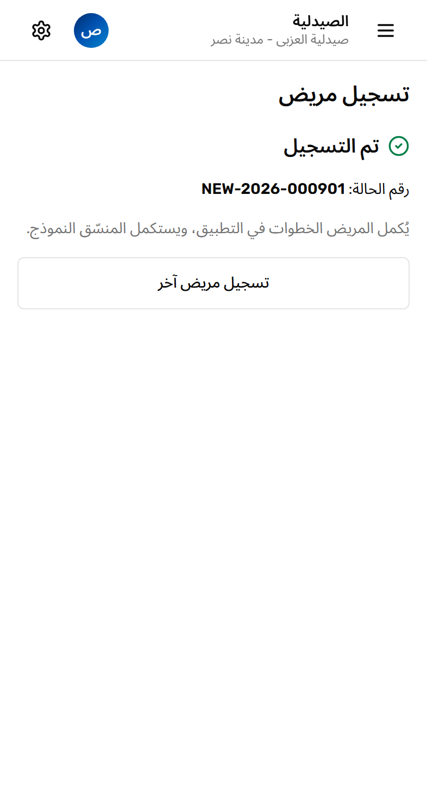
- 1تم التسجيل — يظهر رقم الحالة تحتها.
- 2يُكمل المريض الخطوات في التطبيق، ويستكمل المنسّق النموذج. استخدم تسجيل مريض آخر للمريض التالي.
إذا كان المريض معروفًا لدى MedTech فأنت تؤكد فقط أنه هو:
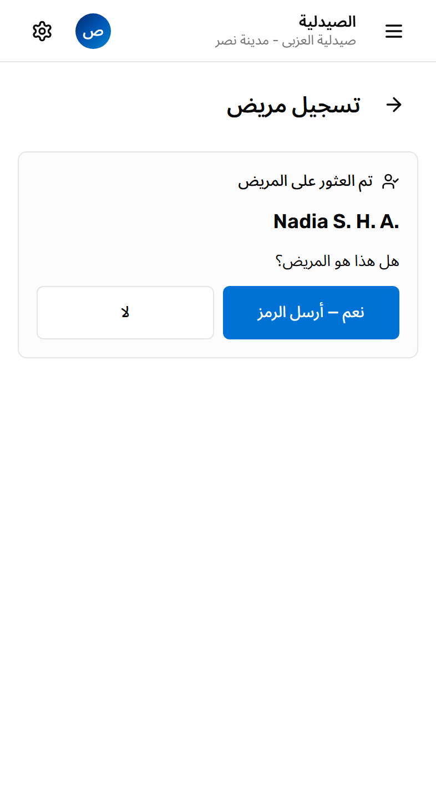
- 1تم العثور على المريض.
- 2هل هذا هو المريض؟ الاسم مختصر عن قصد — قارنه بالبطاقة.
- 3نعم — أرسل الرمز يرسل رمز التأكيد إلى رقم الموبايل المسجّل للمريض، ثم أكمل كما سبق.
إجابات سريعة
هل يمكنني التسليم قبل أن يؤكد المريض؟ لا. انتظر دائمًا رسالة تم التأكيد — أتلف العلبة ثم سلّمها.
بطارية هاتف المريض فارغة. يجب أن يؤكد المريض من هاتفه هو. اطلب منه العودة بعد شحنه؛ تبقى الجرعة في الانتظار.
فتحت مريضًا خطأ. اضغط إلغاء. لا يُسجَّل شيء قبل الإرسال.
أرسلت ولكن المريض غادر. يبقى الكود مقفلًا بحالة بانتظار المريض، ويستطيع مشغّل البرنامج تحريره.
من يرى ما قمت به؟ كل تسليم يُسجَّل باسم فرعك مع وقت فتحه وإرساله وتأكيده.